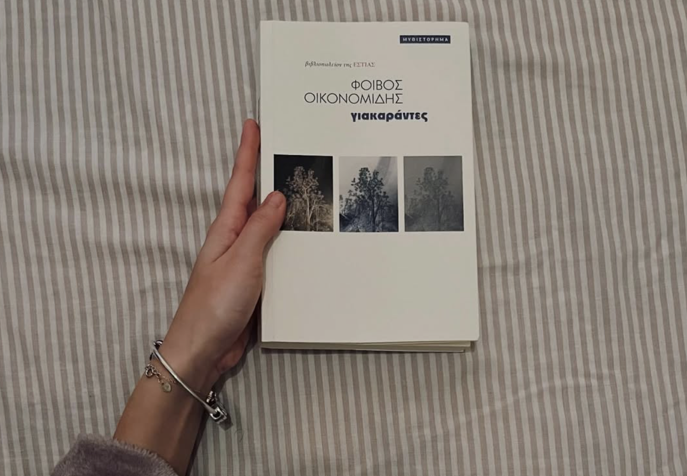
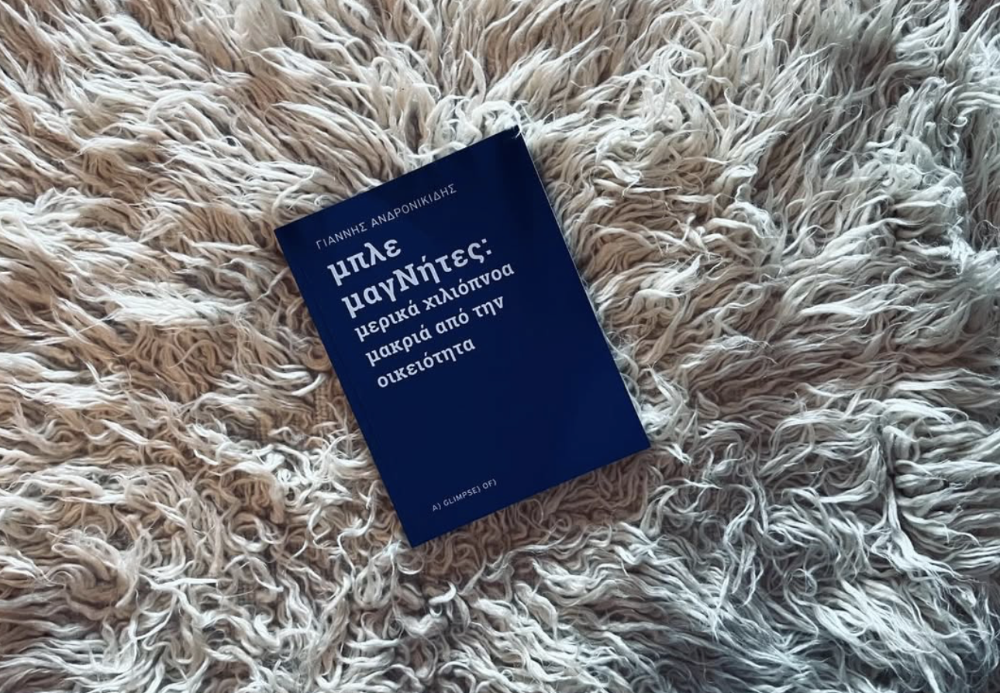
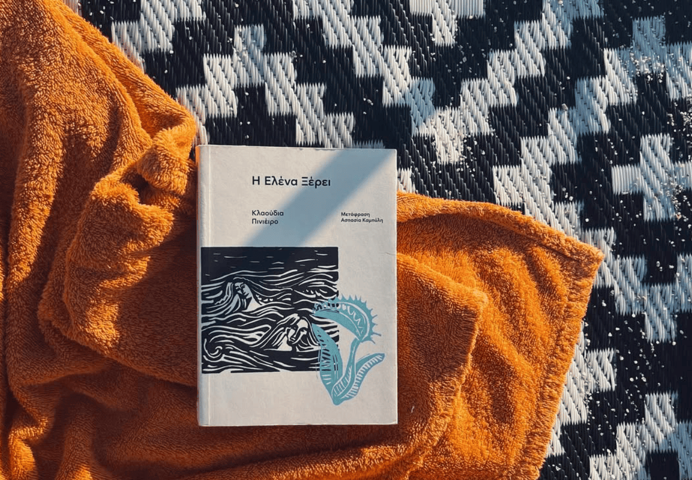
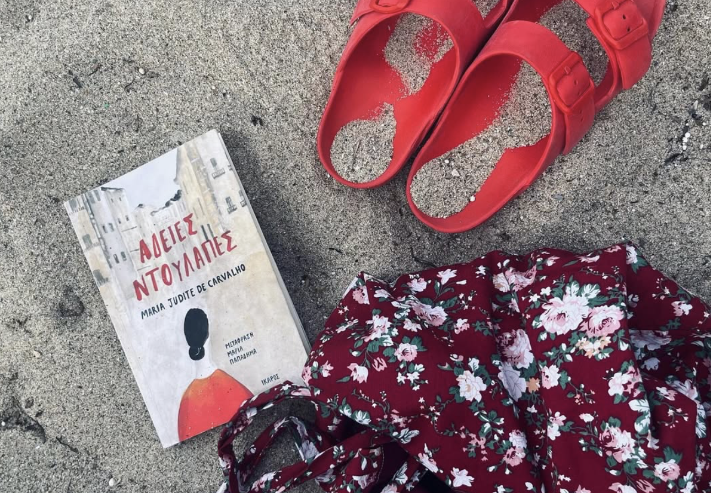
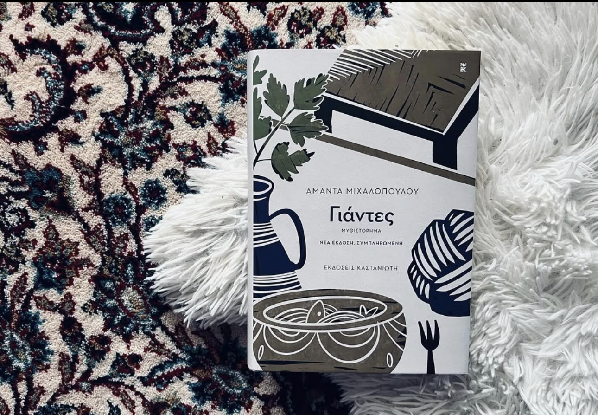

«Δεν διαβάζουμε για να ξεφύγουμε από τη ζωή, αλλά για να τη βρούμε.» — C.S. Lewis

Λένε πολλά για τη σημερινή γενιά των τριαντάρηδων. Συνήθως κατηγορούν και σπάνια προσπαθούν να καταλάβουν. Ο Φοιβος όμως αγκαλιάζει αυτή τη γενια και με μια ωραία και καλοδουλεμένη αφήγηση μάς τη συστήνει.
Ένα βιβλίο για εμάς που ζούμε και παλεύουμε στο σήμερα.

Ένας άντρας (ή ένα παιδί) συνομιλεί με τον παππού του (ή με τα θραύσματα της μνήμης του). Βουτάει στο μυαλό του και συνθέτει την ιστορία της οικογένειας του σαν να ταξιδεύει στον κορμό ενός δέντρου για να φτάσει βαθιά στις ρίζες του και να δει την αρχή. Θέλει να εξερευνήσει, να αναζητήσει, να καταλάβει ίσως και απλώς να θέλει να πει την ιστορία σε κάποιον άγνωστο αναγνώστη. Μπορεί να θέλει να νιώσει μια ανακούφιση μέσω του μοιράσματος.
Συνθέτει και ταυτόχρονα αποσυνθετει μια σειρά από μετακινήσεις, συναντήσεις, σκέψεις, εικόνες και συναισθήματα αφήνοντας το μυαλό να κάνει τα δικά του παιχνίδια. Είναι ένα βιβλίο κι ένα μη βιβλίο. Ένας συνδυασμός σχημάτων, λέξεων και φωτογραφιων. Μια παρουσία και μια απουσια. Για να το διαβάσεις χρειάζεται απλώς να το αφήσεις να σε παρασύρει στον λαβύρινθο των λέξεων.

Όσο μεγαλώνω οι φόβοι και οι ανησυχίες μου αυξάνονται. Πρώτα σκέφτομαι το σώμα που γερνάει, τη φθαρτότητα της ύπαρξης, το ότι ερχόμαστε και φεύγουμε και όλα διαρκούν όσο μια ανάσα.
Μετά με πιάνουν οι σκέψεις της μητρότητας. Ρωτάω τη μαμά μου πώς μπορεί να ζει με την αγωνία ότι οποιαδήποτε στιγμή μπορεί να πάθω κάτι. Τι σκεφτόταν όταν με άφηνε στο σχολείο, όταν μας πήγαιναν εκδρομή με το λεωφορείο, όταν ήμουν στην κατασκήνωση. Τι σκέφτεται τώρα όταν οδηγάω, όταν ταξιδεύω με αεροπλάνο, όταν της λέω ότι πονάω κάπου, όταν γυριζω μόνη μου τη νύχτα. Τη ρωτάω τι θα κάνω αν αποκτήσω παιδιά, πώς θα αντέξω όλη αυτήν την αγωνία, τι θα γίνει αν το παιδί μου πεθάνει.
Εκείνη κουνάει τους ώμους της και μου λέει να αλλάξω κουβέντα. Καμιά φορά πετάει ένα «μαθαίνεις να ζεις με αυτήν την αγωνία» ή «δεν το ξεπερνάς ποτε» και σηκώνεται να πλύνει τα πιάτα. Η Ελένα, που ψάχνει να βρει το πώς και το γιατί πέθανε η κόρη της, συνομίλησε με αυτούς τους φόβους μου. Έχοντας ένα σώμα που την έχει εγκαταλείψει, χτυπημένο από το Πάρκινσον, πονεμένο και αργοκίνητο ξεκινάει από το σπιτι της για να φτάσει σε έναν άνθρωπο που ίσως την βοηθήσει να μάθει πώς τελικα πέθανε η κόρη της.

Καλοκαίρι είναι να τινάζεις την άμμο μέσα από τα βιβλία και να μυρίζεις το αντηλιακό στην άκρη των σελίδων.
Καλοκαίρι είναι να βουτάς τα πόδια σου στην ακροθαλασσιά και να διαβάζεις για τις γυναίκες μιας άλλης εποχής που όμως έχουν πολλά κοινά με τις γυναίκες σήμερα.
Καλοκαίρι είναι να ζεσταίνει ο ήλιος το σώμα σου και να αναρωτιέσαι τι γίνεται με όλες εκείνες τις γυναίκες που κάποτε έμειναν χήρες στα 50 τους και δεν επέτρεψαν ποτε στον εαυτό τους να ξανά ερωτευτεί.

Διάβασα πρώτη φορά αυτό το βιβλίο πριν από δυόμιση χρόνια, όταν βρισκόμουν σε μια κομβική φάση στη ζωή μου. Όλα μου έφταιγαν, αναζητούσα τα βήματά μου, ένιωθα μετέωρη. Και βρήκα στην Αθηνά, τα λόγια και τα συναισθήματα που έψαχνα. Η Αθηνά, εκεί γύρω στα τριάντα, αρχίζει να αναζητά τον εαυτό της, συγκρούεται με ό,τι ήξερε ως τότε, οι σχέσεις της με την οικογένειά της διαρρηγνύονται, οι προσπάθειές της να ερωτευτεί αποτυγχάνουν και τελικά σπάει τα δεσμά της και βρίσκει τα πατήματά της. Μέσα στις σελίδες αυτού του βιβλίου βρήκα πολλές φορές τον εαυτό μου, σημείωσα πολλά αστεράκια στα οποία επανέρχομαι συχνά, συγκινήθηκα, ένιωσα αγωνία και σίγουρα βγήκα πιο πλούσια τόσο σε συναισθήματα όσο και σε γνώσεις. διαβάστε περισσότερα